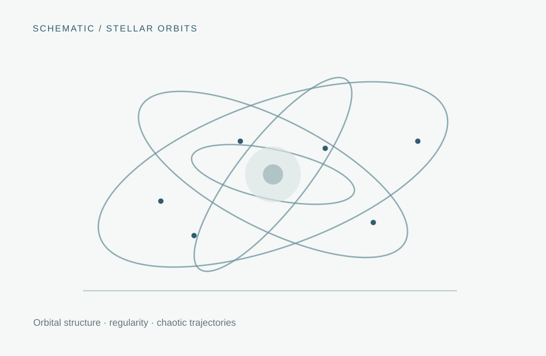

02 / Computational astrophysics
Galactic dynamics & chaos
Understanding orbital regularity, instability, and phase-space structure within modeled galactic gravitational fields.

01 / Overview
Overview
This work uses numerical orbit integration to investigate the stability of stellar trajectories in galactic potentials. The analysis combines phase-space coordinates with diagnostics of chaotic behavior, including finite-time Lyapunov exponents, energy, and angular momentum.
02 / Background
Scientific context
Stars move in a collective gravitational potential generated by a galaxy’s mass distribution. Depending on the potential and initial conditions, orbits may remain regular or become sensitive to small perturbations. Characterizing that behavior provides a dynamical perspective on galactic structure and evolution.
03 / Motivation
Research questions
- Which regions of sampled phase space show evidence of sensitive dependence on initial conditions?
- How does orbital behavior vary with energy and angular momentum?
- What changes when orbits are analyzed in a coordinate system aligned with the system’s kinematic axes?
04 / Approach
Methods & techniques
Potential construction
Use AGAMA to model gravitational potentials and integrate sampled stellar trajectories.
Coordinate analysis
Construct and diagonalize the kinetic-energy tensor to identify principal directions and transform positions and velocities.
Chaos diagnostics
Examine finite-time Lyapunov exponents alongside orbital projections, surfaces of section, energy, and angular momentum.
05 / Progress
Project notes
The analysis workflow includes orbit integrations, distributions of Lyapunov exponents, and phase-space scatter plots. Individual figures will be incorporated after choosing a representative simulation snapshot.
06 / Supporting material
Figures & research outputs
Add surfaces of section, selected trajectories, or the energy–Lyapunov analysis plots.
Image or publication to be addedPublication links, posters, and code repositories will appear here once they are selected and approved for sharing.